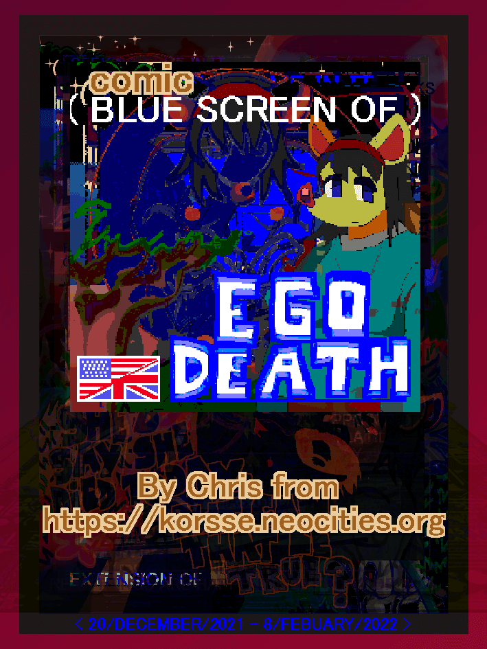

Blue screen of EGO DEATH. ( dec2021-feb2022 )
8 page digital comic in english, about a girl who is so terminaly online that she has lost all sense of who she is outside of her internet persona. Who has a pretentious hubris about how much better
she is than "offline normies" for it. Really it just creates a cycle of self sabotage. She is bored and depressed by her shut in life, but acts "better than" people who go outside.
